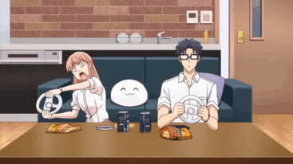

Hello!
Below are three of my favorite childhood animes! To explore a complete list of anime from a variety of different genres, check out My Anime List.
One Piece
Luffy is a young adventurer who sets off from his small village on a perilous journey to find the legendary fabled treasure, ONE PIECE, to become King of the Pirates! On the beginning of his journey, he recruits members for his crew, the StrawHat Pirates.
This is the longest anime I've watched, and one of my first ones! Many character backstories are moving and beautiful. I would definitely recommend following Luffy and his crew on their journey full of thrilling fights, funny memories, and new discoveries.
Cardcaptor Sakura

The story centers on Sakura Kinomoto, an elementary school student who discovers magical powers after accidentally freeing a set of magical cards into the world; she must retrieve the cards to prevent catastrophe.
With portrayals of wholesome family dynamics, friendship dynamics, romance-comedy, magical powers, action, and mystery, this anime is one of my favorite childhood shows. This late 1900s and early 2000s anime is under the "shojo" genre (meaning "girl" in Japanese). Having personally watched this show 3 times as a kid, I'm one of many who fell in love with this anime. It is a nostalgic classic for many into this genre.
Wotakoi: Love Is Hard For Otaku

26-year-old Momose Narumi is a die-hard geek who recently switched jobs, in hopes of being able to play off an image of a perfect, beautiful young lady. However, her hopes are crashed when she reunites with her middle school classmate Nifuji Hirotaka, an avid gamer nerd that knows about her secret.
This romance-comedy makes many references to video games, making it the perfect get-away from your stresses as you recognize all the nerdy references this anime makes. It's a relaxing, adorable, and sweet anime that follows the relationship of two office couples.